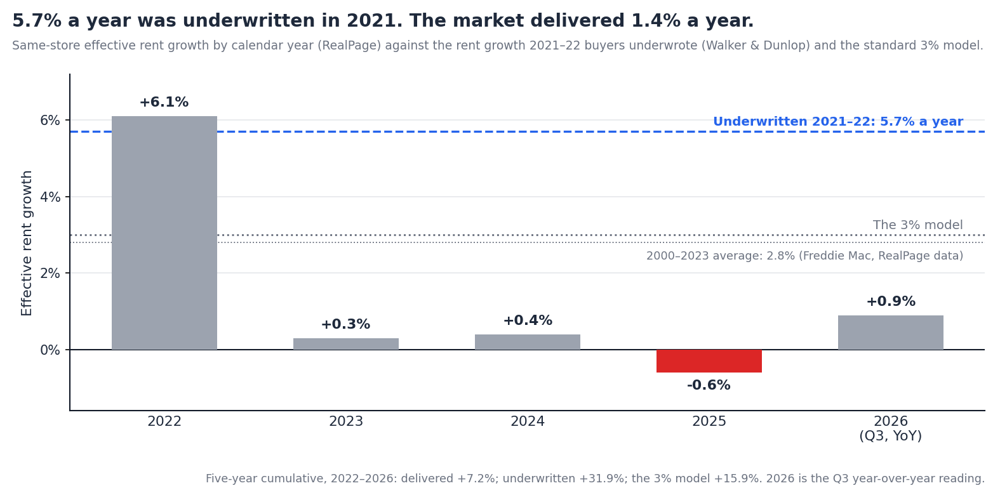
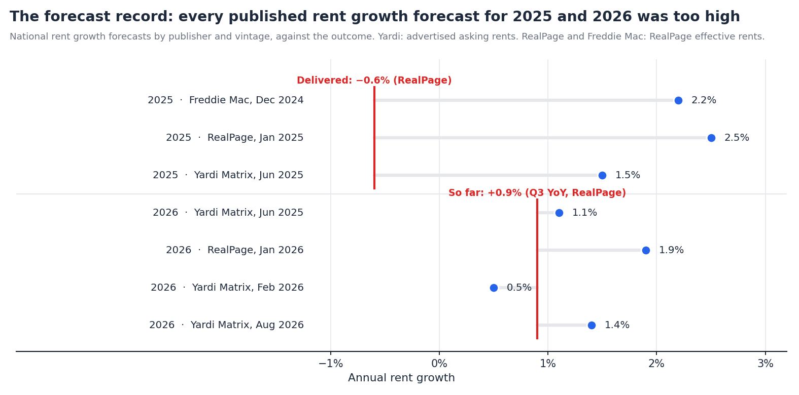

The Rent Growth Underwritten in 2021, and the Rent Growth That Happened
Summary. This is the seventh note in a series that has audited a 2021 multifamily pro forma one input at a time. It is about the input that was wrong by the most. Walker & Dunlop puts the rent growth underwritten by 2021 and 2022 buyers at about 5.7% a year. CBRE's survey had the assumption at 3.6% by Q3 2022, 3.1% by Q4 2022 and 2.7% today. What RealPage's same-store series delivered: +6.1% in 2022, +0.3% in 2023, +0.4% in 2024, about −0.6% in 2025, and +0.9% year over year as of Q3 2026. Five years compounded: +7.2%, or 1.4% a year, against the +31.9% that 5.7% a year implied.
We run the representative $24M building through the underwritten path, the standard 3% path and the one that happened, then assemble the forecast record for 2025 and 2026 and ask what rent growth a deal bought today needs. Findings:

The 2021 number. Walker & Dunlop's 2026 outlook, as reported by Curated Commercial, puts the annual rent growth underwritten by multifamily buyers in 2021 and 2022 at about 5.7%, against entry cap rates near 3.6% and exit caps near 4.6%, for a projected levered return of about 12%. The same source puts 2025 buyers at 2.2% rent growth, a 5.2% entry cap, and a projected return near 13.5%. Buyers are underwriting less than half the rent growth and expecting more return, because the going-in yield has done the work.
The survey series. CBRE's quarterly underwriting survey tracks the three-year rent growth assumption for prime and, from 2024, core and value-add assets:
| Survey vintage | Three-year rent growth assumption | Asset class |
|---|---|---|
| Q3 2022 | 3.6% | prime |
| Q4 2022 | 3.1% | prime |
| Q1 2023 | 2.9% | prime |
| Q1 2024 | 2.3% | prime |
| Q4 2024 | 2.7% | core |
| Q4 2025 | 2.7% core, 3.1% value-add | core / value-add |
CBRE's Q1 2023 brief notes that the long-run average for the assumption is about 3%. Freddie Mac's 2025 outlook, using RealPage data, puts realized rent growth over 2000 to 2023 at 2.8% a year. The convention and the history agree on roughly 3%, which is why 3% is the number in most models.
What 5.7% required. Compounded over a five-year hold, 5.7% a year is +31.9% in revenue. The 3% convention is +15.9%. The difference between them on the representative deal is about $300K a year of NOI by year five, and, at a 5% exit cap, $6M of sale price.
RealPage's same-store effective rent series is the cleanest national measure: it tracks the same units, nets out concessions, and publishes a calendar-year figure.
| Year | Same-store effective rent growth | Context |
|---|---|---|
| 2021 | about 11% | the record year; year-over-year peaked near 15.7% in early 2022 |
| 2022 | +6.1% | inflated by the first half; rents fell from September |
| 2023 | +0.3% | second-weakest year since 2009; about 440,000 units delivered |
| 2024 | +0.4% | 22 of the top 50 markets cut rents; 588,000 units delivered |
| 2025 | about −0.6% | first year-over-year decline since 2020, from August |
| 2026 | +0.9% YoY at Q3 | occupancy 95.4%; 318,000 units in the trailing year |
For a building bought in Q4 2021, the hold covers 2022 through 2026. Compounded, those five readings are +7.2%, or 1.4% a year. The 2022 figure carries almost all of it; 2023 through 2026 together are +1.0%.
The three-year test. CBRE's Q4 2022 survey assumed 3.1% a year for the next three years, which is 2023 through 2025. RealPage recorded +0.3%, +0.4% and −0.6%: a cumulative +0.1%, or 0.03% a year. The assumption was not optimistic by the standards of its time. It was simply the long-run average, applied to the three years in which the largest supply wave since the 1980s arrived.
Other series agree on the shape. Apartment List's repeat-transaction index, which measures leases signed rather than asking rents, shows −0.8% in 2023, −0.5% in 2024, and a third negative year in 2025, with the first positive reading in over three years, +0.1%, in October 2026. Yardi Matrix's advertised-rent series ran at +0.2% year over year in November 2025 and about +1% through mid-2026. The levels differ by method; none of them is near 3%.
Underwriting assumptions are not made in a vacuum. They lean on published forecasts, and the forecasts have a record.

| Forecast for | Published | By | Forecast | Outcome | Miss |
|---|---|---|---|---|---|
| 2025 | December 2024 | Freddie Mac (RealPage data) | 2.2% | −0.6% | 2.8 pts |
| 2025 | January 2025 | RealPage | 2.5% | −0.6% | 3.1 pts |
| 2025 | June 2025 | Yardi Matrix | 1.5% | +0.2% (Yardi, Nov YoY) | 1.3 pts |
| 2026 | June 2025 | Yardi Matrix | 1.1% | +0.9% YoY at Q3 (RealPage); +0.1% (Apartment List, Oct) | open |
| 2026 | January 2026 | RealPage | 1.9% | ||
| 2026 | February 2026 | Yardi Matrix | 0.5% | ||
| 2026 | August 2026 | Yardi Matrix | 1.4% | ||
| next 12 months | October 2026 | RealPage | 2.4% |
2025 was missed by everyone, in the same direction. The two forecasts made before the year began were 2.2% and 2.5%; the outcome was a decline. Yardi's mid-year revision to 1.5% was still above what its own series then recorded.
2026 has been revised in both directions. Yardi went from 1.1% to 0.5% to 1.4% across three vintages in fourteen months, and the latest move was up. RealPage cut its outlook to 1.9% in January and now projects 2.4% for the coming year. The third-quarter reading of 0.9% sits below every one of them except Yardi's February number.
None of this is a criticism of the forecasters. Supply was known, and the forecasts had it. What the record shows is the size of the error band around any national rent forecast, about three points in a bad year, against an underwriting convention that enters one number to a tenth of a percent and holds it for five years.
The building is the one from the earlier notes: $24M in Q4 2021 at a 4.70% cap, $1.128M of NOI, 61% margin, 65% LTV at 3.75%, five-year hold. Revenue grows on each path below; expenses grow 3% a year except where noted. We show two exits: the survey convention of 4.91% and the 5.75% the market is paying.
| Rent growth path, 2022–2026 | Year-5 NOI | IRR at 4.91% exit | Multiple | IRR at 5.75% exit | Multiple |
|---|---|---|---|---|---|
| Underwritten: 5.7% a year | $1.60M | 23.0% | 2.67x | 16.9% | 2.08x |
| The 3% model | $1.31M | 12.5% | 1.75x | 5.4% | 1.28x |
| CBRE Q4 2022 survey: 3.1% | $1.32M | 12.9% | 1.78x | 5.9% | 1.31x |
| What happened: 6.1, 0.3, 0.4, −0.6, 0.9 | $1.15M | 5.1% | 1.26x | −3.3% | 0.86x |
| What happened, with expenses at 6.4% | $1.00M | −14.1% | 0.51x |
5.7% was the plan, and it was a good one. On the underwritten path the deal returns 23% even at the survey's exit cap and 17% at the market's. Rent growth at that rate would have covered the entire cap rate move. That is the arithmetic that justified a 3.6% going-in cap in 2021: the exit could expand 100 bps and the deal still worked, provided rents did what they had just done.
What happened is a different deal. On the realized path, year-five NOI is $1.15M, 12% below the 3% model and 28% below the underwritten plan. At the survey exit the equity returns 1.26x, a 5% IRR, which is a cash yield with no growth. At the market exit it returns 0.86x. Add the expense growth documented in the last note and it returns half the equity.
Rent growth and the exit cap are the same bet. The two inputs this series has found furthest from the outcome are both forecasts of the same thing: how much a buyer in 2026 will pay for a dollar of 2026 NOI. The rent growth assumption decides the dollar; the exit cap decides the price. A model that sets both to the long-run average has placed the same bet twice and shown it once.
Buying the same building today: $21.6M at a 5.75% cap, $1.24M of NOI, 58% leverage at a 7.0% coupon, five-year hold, exit at 6.00%, expenses at 3%.
| Rent growth, per year | Who says so | 5-yr levered IRR | Multiple | IRR if expenses grow 6.4% |
|---|---|---|---|---|
| 0.9% | Q3 2026 actual (RealPage) | −0.1% | 1.00x | −9.6% |
| 1.4% | Yardi Matrix, 2026 | 2.5% | 1.13x | −6.0% |
| 1.9% | RealPage, 2026 | 5.0% | 1.26x | −2.7% |
| 2.4% | RealPage, next 12 months | 7.3% | 1.39x | 0.2% |
| 2.7% | CBRE survey, core buyers | 8.6% | 1.48x | 1.9% |
| 3.0% | the model | 9.9% | 1.56x | 3.5% |
| 3.5% | break-even for a 12% IRR | 12.0% | ||
| 5.7% | 2021 underwriting | 20.1% | 2.38x | 15.6% |
The deal needs more rent growth than anyone is forecasting. A 12% return requires 3.5% a year. The most optimistic published number is RealPage's 2.4% for the coming year, and that is for one year, not five. At the 2.7% that CBRE's survey says core buyers are underwriting, the deal returns 8.6%, below the survey's own 7.7% unlevered target once leverage at 7% is paid for.
At the market's current pace it returns nothing. 0.9% a year produces a −0.1% IRR and the equity back at par after five years. With expenses growing as they did from 2021 to 2024, every row above 2.4% turns negative.
The 2021 assumption would still work. At 5.7% a year, today's deal returns 20%. That is the honest version of the bull case: a buyer at 5.75% is not betting on cap rates, which have already moved, but on a return to 2021 rent growth. Nothing in the five-year record, the supply pipeline or the forecast set supports it.
Three things follow.
Underwrite rent growth as a range with a record, not a number with a decimal. The national forecast error in 2025 was about three points. A model that shows the return at the forecast, at the forecast less three points, and at the trailing three-year actual tells a committee what it is being asked to believe. Right now the trailing three years are flat.
Print the break-even rent growth next to the assumed one. On today's deal the target needs 3.5% a year; the assumption is 2.7%; the market is delivering 0.9%. Three numbers on one line say more than the IRR does.
Treat rent growth and the exit cap as one bet. They are both the 2031 buyer's view of 2031 NOI. A sensitivity table that flexes them separately, and a summary page that reports the best cell, understates the correlation and overstates the downside protection. Flex them together.
The model is the one used throughout this series: a single revenue line and a single expense line, growth applied uniformly, forward-NOI exit, fixed-rate amortizing debt. The realized path is national; a Midwest or Northeast asset did better and a Sun Belt delivery market did worse. Each of those moves a specific deal's number. None of them changes the finding that the rent growth underwritten in 2021 was four times what the market delivered, and that today's assumption is three times what it is delivering now.
Yardi revised its 2026 forecast three times in fourteen months. A model that takes weeks to build gets underwritten at one vintage and defended at the rest. Teez takes an OM, T-12 and rent roll to a full model in minutes and re-runs it in minutes when a forecast, a comp or the index changes, in the sponsor's own Excel template, so the deal is re-underwritten at every vintage instead of the first one. More at teez.ai.